Democratising lab automation: training affordable robots for precision tasks with reinforcement learning
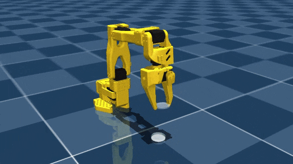
Figure 1Abstract
Laboratory automation can dramatically improve research efficiency, but precision robotic systems remain prohibitively expensive for many facilities. While open-source hardware like the SO-101 has brought equipment costs down to under $300, training these robots for delicate tasks typically requires expensive expert demonstrations and teleoperation setups. This study investigates whether reinforcement learning (RL) can train low-cost robots for precision laboratory manipulation using simulation alone, eliminating the need for costly human demonstrations.
I trained an SO-101 to perform petri-dish lid manipulation using the Soft Actor-Critic (SAC) algorithm in MuJoCo physics simulation. The task requires the robot to grasp and lift a petri-dish lid without cracking it, dropping it, or disturbing the dish contents, a deceptively difficult problem involving precise force control and careful contact management. Reward function design was iteratively refined across 15 versions, balancing intermediate rewards to guide learning while penalising premature gripper closure or excessive force.
Across over 30 experiments, agents consistently exhibited reward hacking rather than learning functional manipulation. Two primary failure modes emerged: forceful lid manipulation inappropriate for delicate labware, and overly cautious hovering in locally optimal positions. Only one configuration achieved lid lifting, with a 20% success rate using forceful manipulation. Training exhibited high instability, with performance collapsing after sparse successes. Additional failures included simulation instabilities from aggressive exploration causing MuJoCo solver failures, and replay-buffer contamination from corrupted states degrading policy performance.
These findings suggest that applying RL to precision manipulation without prior structure (demonstrations, curriculum learning, or constrained action spaces) presents significant challenges. The thin contact margins of delicate labware create extremely sparse success conditions that pure exploration struggles to discover reliably. Future work will explore demonstration-augmented RL for initial behavioural scaffolding, enlarged collision geometries to ease contact detection, and action clipping to prevent simulation instabilities. Real-robot validation is planned to assess sim-to-real transfer. The ultimate goal remains making precision laboratory automation accessible to facilities that cannot afford traditional robotic systems.
Background
Laboratory automation could revolutionise bioengineering research, if only it weren’t so expensive. Robotic arms precise enough for delicate lab work have traditionally cost $50,000+. But the hardware barrier has fallen: open-source designs like the SO-101 now cost under $300.
Imagine a future where researchers spend their time on experimental design rather than pipetting, startups run overnight protocols autonomously, and protocols are shared as reproducible robot policies instead of ambiguous written instructions.
The remaining challenge is training. Unlike traditional imitation learning, which requires expensive human demonstrations, RL agents learn through simulated trial and error over millions of runs.
(open hardware)
precision arm
reduction
Why Soft Actor-Critic
I implemented Soft Actor-Critic (SAC), an off-policy algorithm chosen over TD3 because its entropy maximisation provides more principled exploration for contact-rich tasks. The stochastic policy should discover more robust approaches to handle variations in dish positioning.
As an off-policy method, SAC learns from a replay buffer of past experiences, more sample efficient than on-policy methods like PPO. As a model-free method, it learns directly from MuJoCo’s simulation rather than building a secondary world model.
- Entropy tuning: α auto-adjusts to maintain target entropy
- Critic update: twin Q-networks; minimum prediction reduces overestimation
- Actor update: maximise Q − α·log π (reward + exploration)
- Target update: Polyak averaging (τ = 0.005) stabilises learning
Task formulation
- Observation: 21-D state vector. Joint positions (6), joint velocities (6), gripper position (3), Euler orientation (3), lid position (3)
- Action: 4-D. X/Y/Z end-effector displacement and a gripper open/close command
- Success: lid grasped, lifted to target height, held stable; dish base within 1 cm of its initial position
Methods
I forked Gota Gando’s pick-101 repository and adapted it for petri-dish manipulation, using his blog to guide design choices. The codebase uses the SAC implementation from Stable-Baselines3.
Simulation setup
The system uses MuJoCo (Google DeepMind), the SO-101 model from The Robot Studio & Hugging Face, and a petri-dish mesh from GrabCAD which I modified to include collision primitives. Trained on a single RTX 4050 GPU.
Gando discovered that mesh-to-mesh collisions are unstable in MuJoCo and added box primitives to the gripper fingertips for stable contact. I built on this with invisible cylinder primitives for the petri dish: fingertips contact the cylinders while the visible mesh remains purely visual, improving collision stability.
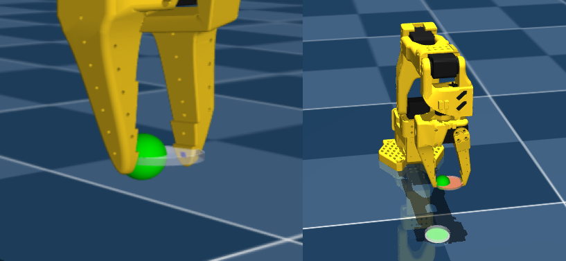
Reward design (v19 → v20)
Following Gando, I started at v20, adapting his cube-lifting v19 to petri-dish mechanics:
- Height alignment to guide precise descent
- Contact bonuses for single & bilateral touch
- Closing incentive at correct height
- Gentle pressure with tolerance bounds
- Penalties for dish displacement & gripper jitter
- Increased grasp bonus, tighter thresholds
Training protocol
- 500 k steps · 400 k buffer · batch 256 · γ = 0.99 · τ = 0.005 · lr 3 × 10⁻⁴
- 200–300 k steps (~2–3 h), terminated early on reward hacking; clean runs to 500 k (~5 h)
- Final setup used the full task from initialisation, which produced more robust policies than curriculum stages
Results
SAC explored effectively early but quickly stagnated, falling into reward hacking across all experiments. Across 15 reward iterations, agents consistently exhibited one of two failure modes: forceful manipulation that risked damage, or overly cautious hovering in locally optimal positions.
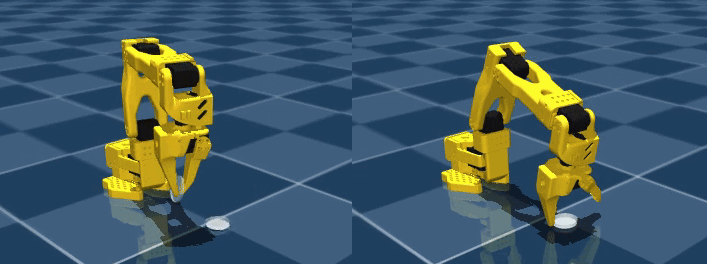
Headline outcome
lifted the lid
(v22, forceful)
runs plateau
After each sparse success, performance rapidly collapsed. Evaluation reward converged to zero despite occasional lifts, suggesting the learned policy was highly unreliable. The agent kept hitting local optima due to the tiny margin of error.
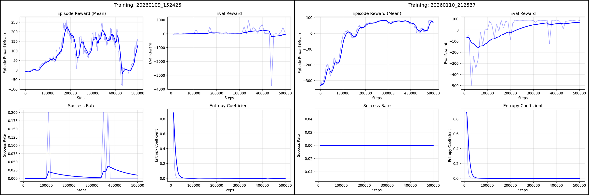
Reward hacking
Reward versions v23 – v26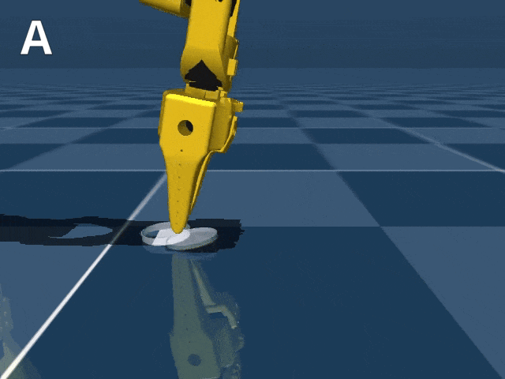
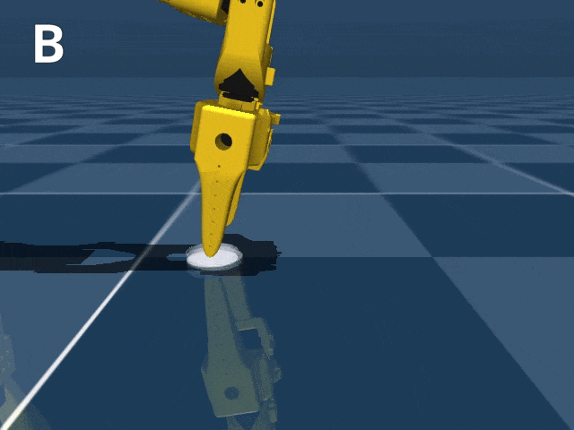
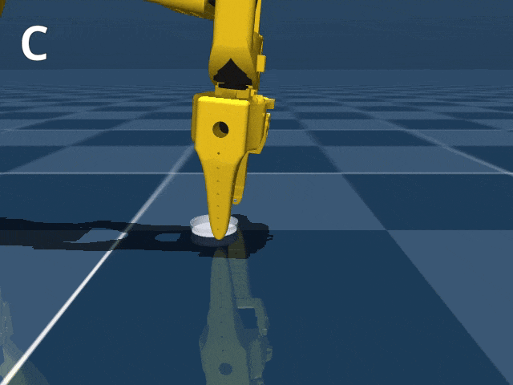
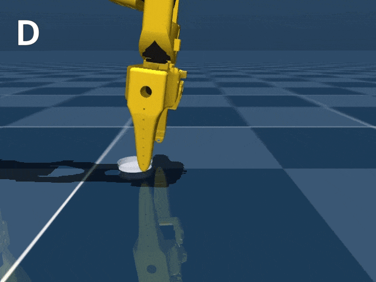
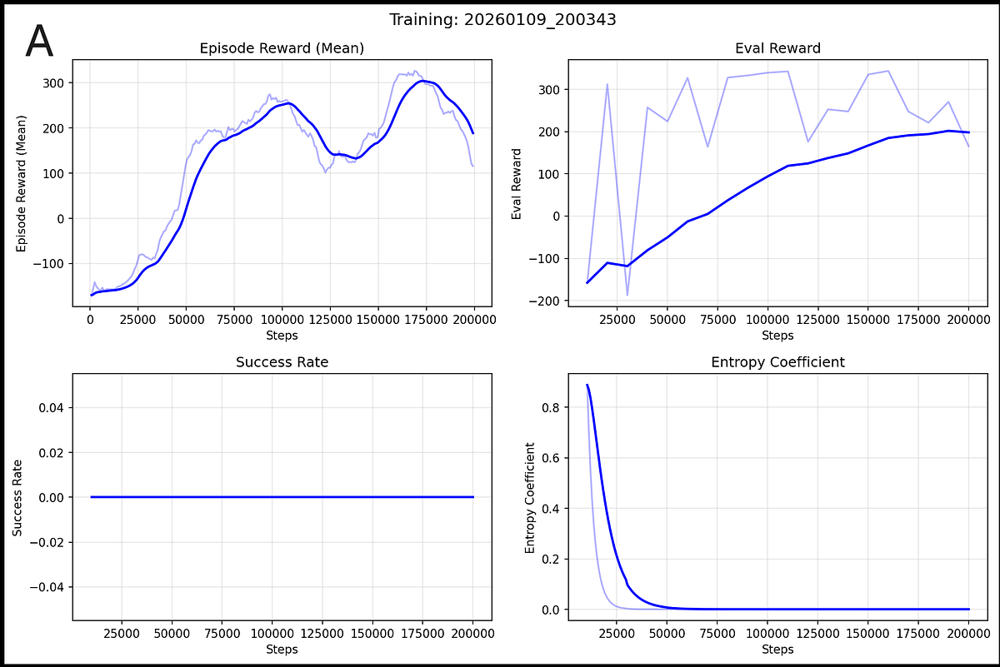
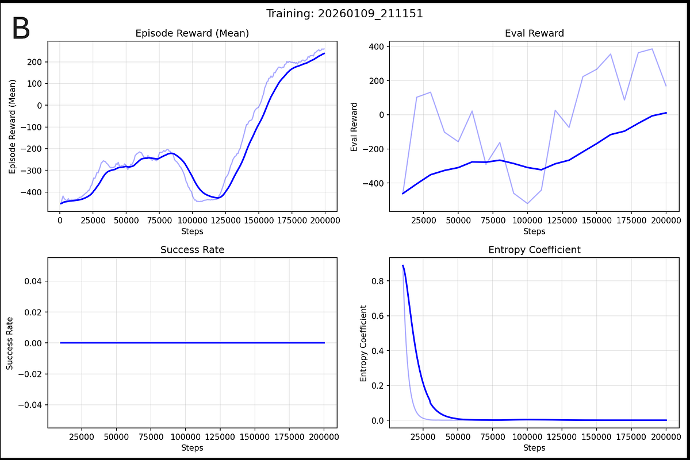
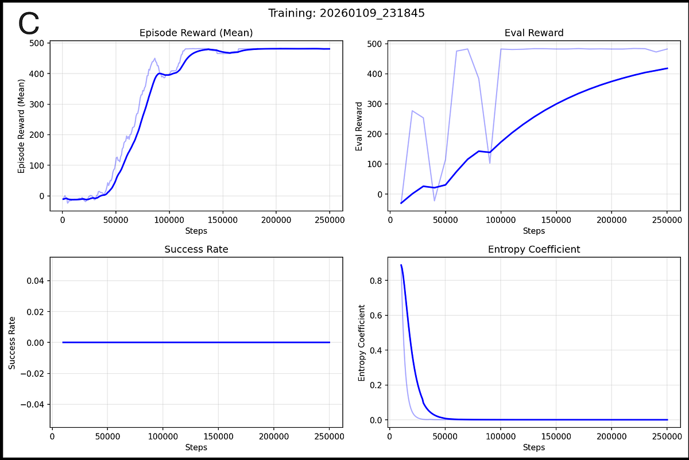
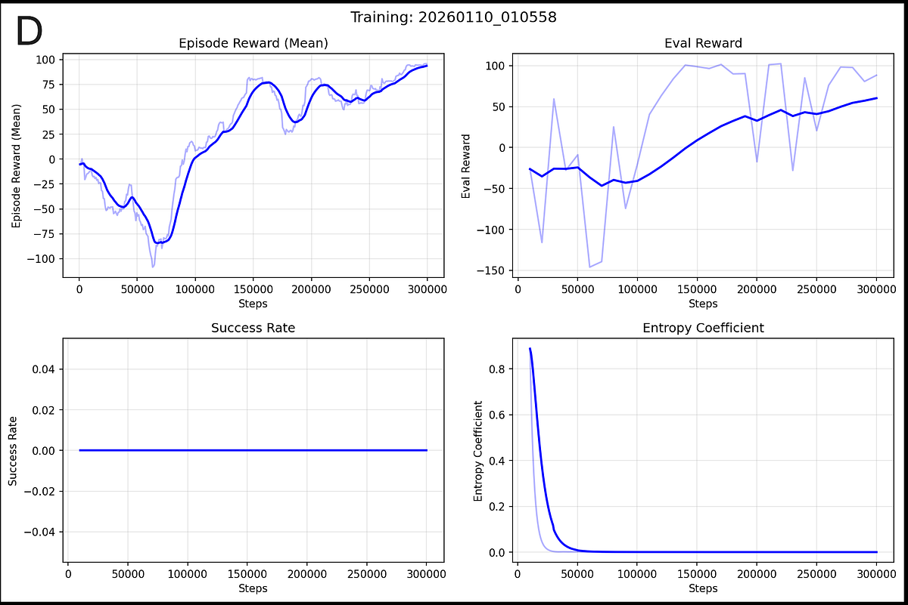
Conclusions
These results reveal both the promise and fundamental challenges of RL for delicate manipulation tasks. While v22 demonstrated that the task is learnable in principle, the low success rate, training instability, and forceful execution suggest significant barriers remain before practical deployment.
Reward shaping proved particularly challenging. In theory, a well-shaped reward leads to the optimal policy. In practice, effective rewards must:
- Guide the agent without over-constraining
- Ensure the final goal dominates intermediate rewards
- Accelerate convergence toward the optimal policy
The simulation-to-reality gap presents a key limitation: in real-world applications the robot would need visual or tactile inputs, while in simulation it received perfect state observation of the dish position and contact detection.
Despite this challenge, RL offers a scalable approach to laboratory automation. Beyond petri dishes, learned policies could handle pipetting, sample transfer, and hazardous materials, reducing accidents and minimising researcher exposure to dangerous substances.
Future directions
Future work should consider enlarged collision geometry or improved curriculum learning, pretraining agents on environments with reduced initial-state noise before introducing full task variability. For more reliable training or safe real-world application, implementing action limits and invalid-state detection would be essential.
- Enlarged collision geometry: the 1.25 mm fingertip vs. 1.5 cm lid is a strict contact-detection bottleneck (Fig 10)
- Action clipping & early termination: keep NaN/Inf states out of the replay buffer
- Demonstration-augmented RL: seed exploration with teleoperated lifts before SAC explores
- Real SO-101 validation: sim-to-real with vision and tactile inputs
- Beyond petri dishes: pipetting, sample transfer, hazardous materials
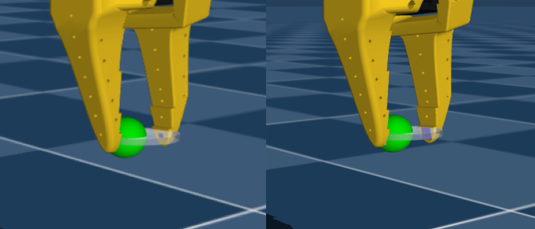
democratising-lab-automation
- Haarnoja, T. et al. (2018). Soft Actor-Critic: Off-Policy Maximum Entropy Deep Reinforcement Learning. arXiv:1801.01290
- Gando, G. pick-101 — original cube-lifting RL framework. github.com/ggand0/pick-101
- The Robot Studio. SO-ARM100 / SO-101 open-source robotic arm. github.com/TheRobotStudio/SO-ARM100
- Todorov, E. et al. MuJoCo physics engine. github.com/google-deepmind/mujoco
- Raffin, A. et al. Stable-Baselines3 — SAC implementation. stable-baselines3.readthedocs.io
- GrabCAD. Petri dish 87 mm model. grabcad.com/library/petri-dish-87mm-1
- Gando, G. SO-101 RL blog. ggando.com/blog/so101-rl-lift
- Adapted code for petri-dish manipulation. github.com/snowcodeer/pick-101